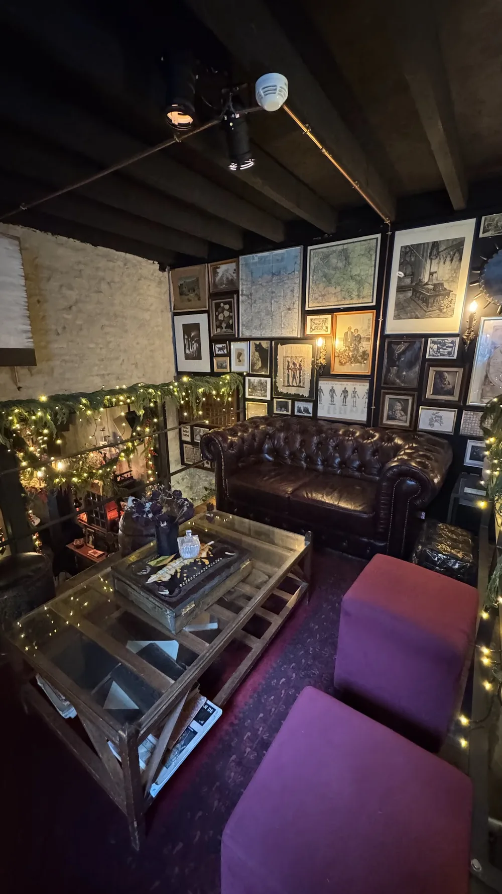
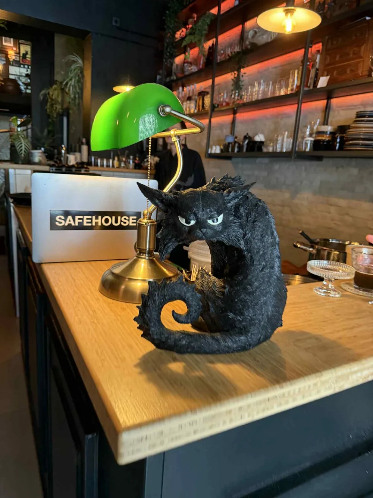
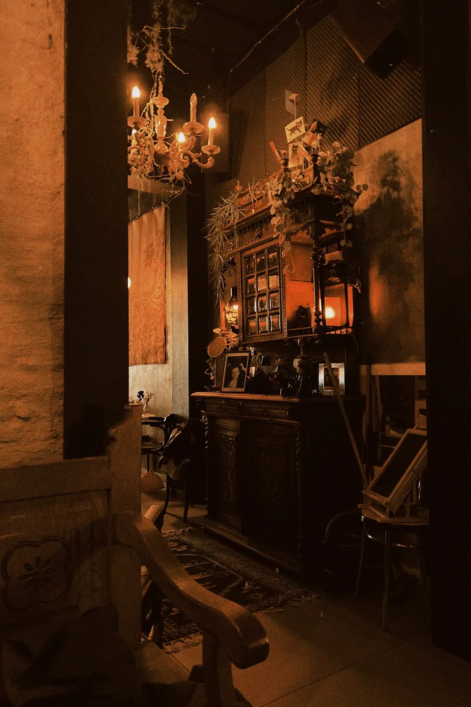
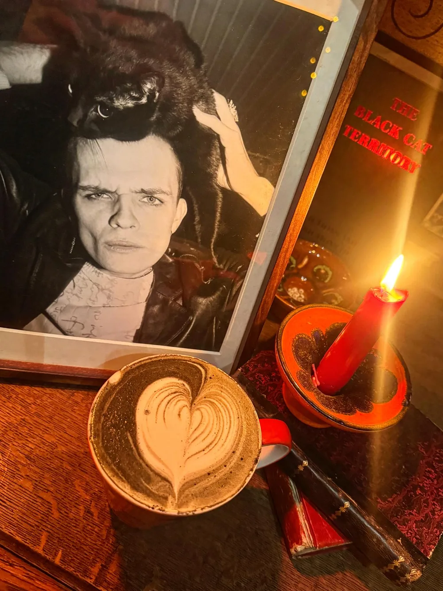
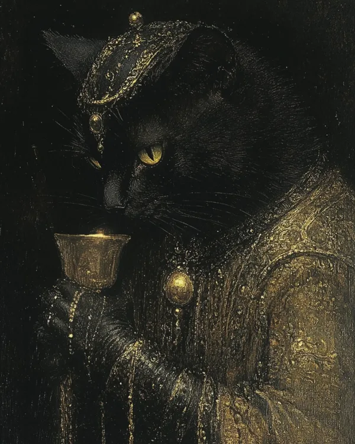
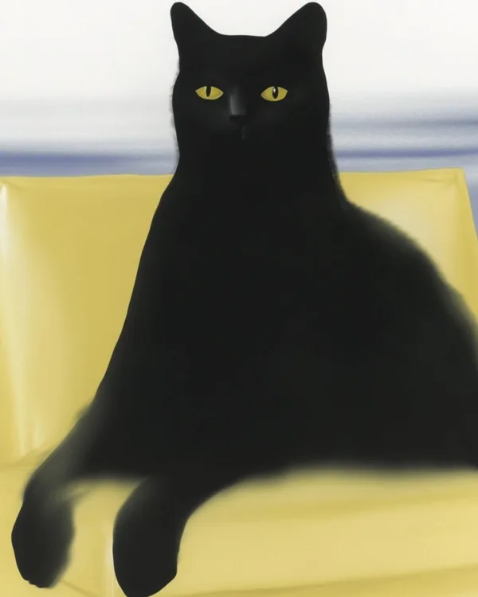
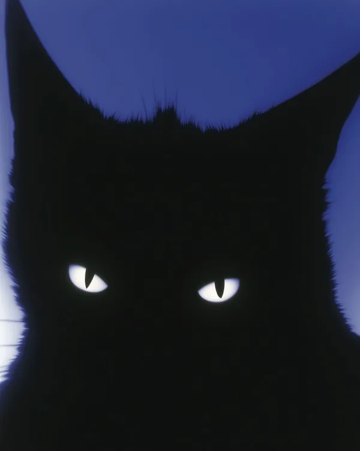
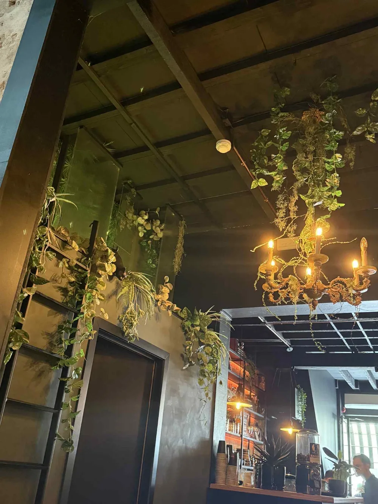

Dark, cozy and full of character
Geen hoek is hetzelfde. Een Chesterfield onder een muur vol prenten, kroonluchters met echte kaarsen, en op de toog houdt een zwarte kat de wacht.



More than just a coffee shop. A place where everything and everyone has a story.Zo begon het, met crowdfunding, in maart 2025
Koffie overdag, koftails als het donker wordt
Koffie, warme chocomelk en chai, en 's avonds een glas wijn, een Mechels biertje of een van de eigen koftails.

De Blackcatcino
Hun eigen koffie, en volgens de reviews net wat anders. Op de foto: het altaartje dat ze ervoor bouwden. No, Arno isn't dead.
Koffie & warm
- BlackcatcinoDe huiskoffieAanrader
- Cappuccino & latte
- Chai latte
- Hot chocolate
Koftails
- Catonic€ 6,80
- Black Iced Coconut€ 7,50
Wijn & bier
- Rode, witte of rosé€ 6,00
- Cava€ 8,00
- Gouden Carolus Tripel of Classic€ 6,00
- Maneblusser€ 4,50
- Carlsberg 0.0€ 4,00

Wat er te eten is, wisselt. Vraag het gewoon aan de toog.

Vrijdag de dertiende is hier een feestdag
Waar anderen thuisblijven, gaat bij Black Cats de muziek aan. Dress in black, bring good vibes, and dance your bad luck away.
Daarnaast is er altijd wel iets: een coffee rave, een saxofoonconcert, slam poetry of een avond waarop pink the new black is.
- Friday the 13th partyDj's in de koffiebar, telkens als de dertiende op een vrijdag valt
- Wat er gepland isElke editie staat eerst op Instagram
Dertig katten om te verzamelen
Eigen ontwerpen, verpakt in blinde sets van vijf en te koop in de koffiebar. Welke je krijgt, weet je pas als je het zakje openmaakt.





Allemaal net wat anders
Een top sfeer in de zaak!! De bediening super!! Allemaal net wat anders..... (...) De blackcatcino een aanrader.paul langerak · Google
Chillen sfeer, mooie zaak, heel vriendelijke mensen, lekkere koffie, lekkere hot choc,... Dikke aanrader!Benjamin Capozzi · Google
Geweldige sfeer, Geweldig decor en een geweldig café. Het drinken is goed, de koffie nog beter en het eten is ontzettend lekker.Eline Ottens · Google
Zeer goede bediening, super lekkere chai latte en cappuccino. Prachtig interieur en sfeer! Zeker aan te raden!Arthur Verfaille · Google
Fantastische plek om relaxed een aantal uren door te brengen. Uitermate sfeervol en bijzonder sympathieke bediening. Wie Mechelen bezoekt moet hier zeker naar binnen.Gerrit Mesker · Google
Geitestraat 15, Mechelen
In het centrum, op een paar minuten van de Grote Markt. Kom je met een grotere groep? Stuur dan gerust eerst een berichtje.
- Maandag en dinsdag gesloten
- Woensdag 10u tot 18u
- Donderdag en vrijdag 12u tot 22u
- Zaterdag 10u tot 20u
- Zondag 11u tot 17u
